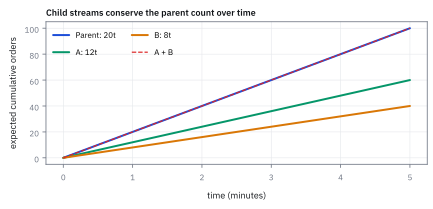
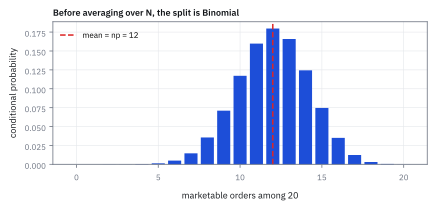
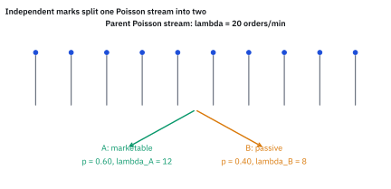

2.4 แบ่งกระแส Poisson: ทำไมสายย่อยจึงเป็นอิสระได้?
ถ้าติดป้ายเหตุการณ์ใน Poisson process ทีละตัวอย่างอิสระ แต่ละป้ายเป็น Poisson process ของตัวเอง และทุกสายอิสระกัน
คำสั่งเข้าระบบซื้อขายเป็น Poisson process อัตรา 20 คำสั่งต่อนาที แต่ละคำสั่งเป็นแบบ marketable (จับคู่ทันที เรียกว่า A) ด้วยโอกาส 0.6 หรือแบบ passive (รอในสมุดคำสั่ง เรียกว่า B) ด้วยโอกาส 0.4 อย่างอิสระต่อกัน (แบบจำลองสมมติ) ทีม execution ถามสองข้อ: นาทีที่เห็นคำสั่ง A เยอะผิดปกติ ควรคาดว่าคำสั่ง B จะน้อยลงไหม และถ้ารู้แล้วว่านาทีนี้มีคำสั่งรวม 20 คำสั่ง จำนวน A แกว่งได้แค่ไหน
ลองตอบก่อนเปิดเฉลย
ข้อแรก ไม่ ก่อนรู้ยอดรวม จำนวน A เป็น Poisson(12) และ B เป็น Poisson(8) ที่อิสระกัน A เยอะไม่บอกอะไรเกี่ยวกับ B เลย ข้อสอง เมื่อรู้ยอดรวม 20 แล้ว A เป็น Binomial(20, 0.6) มีค่าเฉลี่ย 12 เท่าเดิม แต่ variance เหลือ $20(0.6)(0.4)=4.8$ แทน 12 และ B ถูกล็อกเป็น $20-A$ ทันที สองคำตอบไม่ขัดกัน เพราะใช้ข้อมูลคนละชุด
ภาพรวมก่อนลงสูตร
Thinning หรือ splitting คือการเอากระแสเหตุการณ์หนึ่งสาย แล้วโยนเหรียญให้ทุกเหตุการณ์ว่าจะไปสาย A หรือสาย B รูปด้านล่างคือหนึ่งนาทีสมมติ: เส้นบนคือคำสั่งทั้งหมด แต่ละขีดถูกส่งลงไปสายของตัวเองตามสี ผลที่น่าประหลาดใจคือ แต่ละสายยังเป็น Poisson process ด้วยอัตราที่ถูกหาร (12 และ 8 ต่อนาที) และสองสายอิสระกันโดยสิ้นเชิง ทั้งที่มาจากกระแสเดียวกัน
ความอิสระนี้ดูขัดกับสามัญสำนึก เพราะ A กับ B แย่งคำสั่งชุดเดียวกัน หน้านี้จะคลายปมด้วยเครื่องมือทั้งบท: แยกกรณี “รู้ยอดรวม” ซึ่งได้ Binomial ออกจาก “ยังไม่รู้ยอดรวม” ใช้ tower property กับ law of total variance หาค่าเฉลี่ยและ variance พิสูจน์การแจกแจงด้วย joint pmf แล้วดูว่าแรงสองแรงหักล้างกันพอดีได้อย่างไร
ปิดท้ายด้วยเรื่องเงิน: แปลงจำนวน fill เป็นกำไรรายชั่วโมง และดูว่าโอกาส fill ที่ลดลง 10 จุดเปอร์เซ็นต์ทำให้กำไรหายไปเท่าไร
รูป — หนึ่งนาทีของกระแสคำสั่ง แยกเป็นสองสาย
ศัพท์ที่ใช้ในหัวข้อนี้
- Poisson process
- กระแสเหตุการณ์ที่จำนวนในช่วงยาว $t$ เป็น Poisson ค่าเฉลี่ย $\lambda t$ และจำนวนในช่วงเวลาที่ไม่ทับกันอิสระกัน ใช้เป็นแบบจำลองพื้นฐานของคำสั่งที่เข้ามา การผิดนัด หรือการเคลม
- Thinning (splitting)
- การติดป้ายแต่ละเหตุการณ์อย่างอิสระด้วยโอกาสคงที่ แล้วแยกตามป้าย ใช้แตกกระแสคำสั่งตามประเภท ฝั่งซื้อขาย หรือตลาดที่ส่งไป
- Superposition
- ทิศกลับของ thinning: รวม Poisson process ที่อิสระกันหลายสายได้ Poisson process ที่อัตราเป็นผลบวก ใช้รวมกระแสจากหลายแหล่ง
- Probability generating function (PGF)
- $G_N(z)=E[z^N]$ ฟังก์ชันที่เก็บ pmf ของจำนวนเต็มไม่ติดลบไว้เป็นสัมประสิทธิ์ของ $z^n$ ใช้พิสูจน์การแจกแจงและความเป็นอิสระแบบสั้น ๆ
- Overdispersion
- จำนวนที่ variance มากกว่าค่าเฉลี่ย เช่นคำสั่งที่เกาะกลุ่มตามข่าว ทำให้สายย่อยสัมพันธ์กันแบบบวกและไม่อิสระอีกต่อไป
สัญลักษณ์และหน่วย
| สัญลักษณ์ | ความหมาย | หน่วย |
|---|---|---|
| $\lambda$ | อัตราของกระแสแม่ | ครั้งต่อนาที |
| $t$ | ความยาวช่วงเวลา | นาที |
| $\theta=\lambda t$ | จำนวนเฉลี่ยในช่วง $t$ | ครั้ง |
| $p$ | โอกาสที่เหตุการณ์หนึ่งได้ป้าย A | ไม่มีหน่วย |
| $N$, $A$, $B$ | จำนวนทั้งหมด จำนวนป้าย A และป้าย B ในช่วงเดียวกัน | ครั้ง |
ขั้นที่ 1 — แบบจำลอง: กระแสแม่กับป้ายที่สุ่มอย่างอิสระ
ทุกผลในหน้านี้ขึ้นกับสมมติฐานสามข้อ จึงต้องเขียนให้ครบก่อน และต้องแปลงอัตราต่อเวลาเป็นจำนวนเฉลี่ยในช่วงที่สนใจ
สมมติฐานสามข้อ: กระแสแม่เป็น Poisson process อัตราคงที่ $\lambda$ แต่ละเหตุการณ์ได้ป้าย A ด้วยโอกาส $p$ คงที่ อิสระต่อกันและอิสระจากกระแสแม่ และทุกเหตุการณ์อยู่สายเดียวเท่านั้น $A+B=N$ จึงจริงในทุกเส้นทาง พารามิเตอร์ของ Poisson distribution คือจำนวนเฉลี่ย ไม่ใช่อัตรา ถ้า $\lambda$ เป็นต่อนาที $t$ ต้องเป็นนาทีด้วย ช่วงห้านาทีจึงมี $\theta=100$ และค่าเฉลี่ยของ A กับ B ในช่วงนั้นคือ 60 กับ 40
รูป — จำนวนสะสมเฉลี่ยของกระแสแม่และสองสาย

ขั้นที่ 2 — รู้ยอดรวมแล้ว: เหลือแค่การนับหัวก้อย
เริ่มจากกรณีที่ง่ายกว่า ถ้ารู้แล้วว่านาทีนี้มี $N=n$ คำสั่ง สิ่งที่เหลือสุ่มคือป้ายของ $n$ คำสั่งนั้น ซึ่งเหมือนโยนเหรียญ $n$ ครั้ง
นี่คือ binomial distribution ตรงตัว ใช้กับ $k$ ตั้งแต่ 0 ถึง $n$ ถ้า $N=20$ จะได้ค่าเฉลี่ย 12 และ variance $20(0.6)(0.4)=4.8$ บรรทัดสุดท้ายคือจุดสำคัญ: เมื่อรู้ยอดรวม B ถูกกำหนดโดย A ทันที A มากขึ้นหนึ่ง B ต้องน้อยลงหนึ่ง สองสายจึงพึ่งพากันเต็มที่ในโลกที่รู้ยอดรวม
รูป — จำนวน A เมื่อรู้ว่ายอดรวมคือ 20

ขั้นที่ 3 — ยังไม่รู้ยอดรวม: เฉลี่ยกลับด้วยกฎสองข้อของบทนี้
ตอนเช้าเราไม่รู้ว่านาทีหน้าจะมีกี่คำสั่ง ผลจากขั้นก่อนเป็นค่าที่ขึ้นกับ $N$ จึงเฉลี่ยกลับได้ด้วย tower property และ law of total variance
บรรทัดที่สองคือ EVVE: ส่วนภายในคือการแกว่งของการติดป้ายเมื่อรู้ยอดรวม ส่วนระหว่างคือการแกว่งของยอดรวมเอง ซึ่งเป็น $p^2\operatorname{Var}(N)=p^2\theta$ เพราะ Poisson มี variance เท่ากับค่าเฉลี่ย สองส่วนรวมกันได้ $p\theta$ พอดี ที่ $\theta=20$, $p=0.6$ ได้ $4.8+7.2=12$
มองอีกทาง ให้ $I_i$ เป็น 1 เมื่อเหตุการณ์ที่ $i$ ได้ป้าย A แล้ว $A=\sum_{i=1}^{N}I_i$ คือ random sum ของตัวบ่งชี้ ที่มี $\mu=p$ และ $\sigma^2=p(1-p)$ ได้ผลเดียวกัน แต่ค่าเฉลี่ยเท่ากับ variance ยังไม่ใช่ หลักฐานว่า A เป็น Poisson การแจกแจงอื่นก็มีสองค่านี้เท่ากันได้ ต้องพิสูจน์ทั้ง pmf ในขั้นถัดไป
รูป — รู้ยอดรวมกับยังไม่รู้ยอดรวม: ค่าเฉลี่ยเท่ากัน ความกว้างต่างกัน
ขั้นที่ 4 — พิสูจน์ว่าสายเดียวเป็น Poisson
ค่าเฉลี่ยกับ variance ยังไม่พอ ขั้นนี้หาโอกาสของ $A=k$ ทุกค่าโดยตรง จะได้ $A=k$ ได้ ยอดรวมต้องเป็น $n\ge k$ สักค่า จึงรวมทุกกรณีของ $n$
บรรทัดแรกคือ tower property กับตัวบ่งชี้ของ $A=k$: โอกาสคือค่าเฉลี่ยของโอกาสแบบมีเงื่อนไข บรรทัดที่สองแทน pmf ของ Poisson และ Binomial ตรงนี้ $n!$ ตัดกันทันที บรรทัดที่สามคือท่าสำคัญ: ตั้ง $j=n-k$ คือจำนวนที่ได้ป้าย B แล้วแยก $\theta^n=\theta^k\theta^j$ ทุกอย่างที่ไม่มี $j$ ยกออกนอกผลรวมได้
บรรทัดที่สี่ใช้อนุกรมของ $e^x=\sum_{j\ge0}x^j/j!$ บรรทัดสุดท้ายรวมเลขชี้กำลัง $-\theta+\theta(1-p)=-\theta p$ ได้ pmf ของ Poisson ค่าเฉลี่ย $\theta p$ เขียนแบบเดียวกันกับ B ได้ Poisson ค่าเฉลี่ย $\theta(1-p)$ กรณีขอบ $p=0$ หรือ $t=0$ ให้ Poisson(0) ซึ่งเป็นศูนย์แน่นอน
ขั้นที่ 5 — พิสูจน์สองสายพร้อมกัน จึงสรุปความอิสระได้
รู้ว่าแต่ละสายเป็น Poisson ยังไม่พอจะบอกว่าอิสระกัน ต้องดูโอกาสร่วม ข่าวดีคือ $A=k$ และ $B=j$ พร้อมกันบังคับให้ $N=k+j$ ไม่ต้องรวมอะไรเลย
บรรทัดที่สองตัด $(k+j)!$ ทิ้ง บรรทัดที่สามแยก $e^{-\theta}=e^{-\theta p}e^{-\theta(1-p)}$ และ $\theta^{k+j}=\theta^k\theta^j$ แล้วจับคู่ของที่มี $k$ ไว้ด้วยกัน ของที่มี $j$ ไว้ด้วยกัน โอกาสร่วมแยกเป็นผลคูณของโอกาสแต่ละสายได้สำหรับทุก $k$ และ $j$ นี่คือนิยามของ independence
ตรวจด้วยตัวเลขเล็ก: $\theta=2$, $p=\tfrac12$ โอกาส $A=B=1$ คือ $P(N=2)\,P(A=1\mid N=2)=2e^{-2}\times\tfrac12=e^{-2}\approx0.1353$ อีกทาง แต่ละสายเป็น Poisson(1) โอกาสที่สายหนึ่งได้ 1 คือ $e^{-1}$ คูณกันได้ $e^{-2}$ ตรงกัน เมื่อรวมกับการที่กระแสแม่อิสระข้ามช่วงเวลาที่ไม่ทับกัน ได้ว่าสองสายเป็น Poisson process ที่อิสระกันทั้งกระบวนการ ไม่ใช่แค่จำนวนในช่วงเดียว
รูป — โอกาสร่วมของ A และ B กับเส้นของการรู้ยอดรวม
ขั้นที่ 6 — อีกทางที่สั้นกว่า: probability generating function
การพิสูจน์ด้วย pmf ต้องจัดพจน์ทีละตัว PGF ทำทั้งหมดในบรรทัดเดียว และขยายไปหลายป้ายได้ทันที ใช้ $0\le s\le1$ และ $0\le u\le1$ ซึ่งทำให้ทุกค่าเฉลี่ยมีค่าจำกัด
บรรทัดแรกใช้อนุกรมของ $e^x$ อีกครั้ง บรรทัดที่สองคือหัวใจ: เมื่อรู้ $N=n$ เหตุการณ์แต่ละตัวให้ตัวคูณ $s$ ถ้าได้ป้าย A (โอกาส $p$) หรือ $u$ ถ้าได้ป้าย B (โอกาส $1-p$) และป้ายอิสระกัน ค่าเฉลี่ยของผลคูณจึงเป็นผลคูณของค่าเฉลี่ย $n$ ตัว บรรทัดที่สามคือ tower property: แทน $z$ ด้วย $ps+(1-p)u$ แล้วแยกเลขชี้กำลัง
ผลลัพธ์เป็นฟังก์ชันของ $s$ คูณฟังก์ชันของ $u$ แยกกันเด็ดขาด แต่ละตัวเป็น PGF ของ Poisson ค่าเฉลี่ย $\theta p$ และ $\theta(1-p)$ จึงได้ทั้งการแจกแจงและความอิสระ ถ้ามี $r$ ป้ายด้วยโอกาส $p_1,\ldots,p_r$ ที่รวมเป็น 1 ผลคูณจะมี $r$ ตัว และทุกสายเป็น Poisson ที่อิสระกัน
ขั้นที่ 7 — คลายปม: แรงสองแรงที่หักล้างกันพอดี
ทำไมรู้ยอดรวมแล้วสองสายสวนทางกัน แต่ไม่รู้แล้วกลับอิสระ ขั้นนี้วัดสองแรงด้วย covariance โดยใช้ law of total variance ในรูปของ covariance ซึ่งพิสูจน์แบบเดียวกันทุกบรรทัด แค่ใช้ผลคูณแทนกำลังสอง
แรงแรกเป็นลบ: เมื่อรู้ $N$ ตัว B คือ $N-A$ ดังนั้น $\operatorname{Cov}(A,B\mid N)=-\operatorname{Var}(A\mid N)=-Np(1-p)$ แรงที่สองเป็นบวก: นาทีที่คำสั่งรวมเยอะ ค่าเฉลี่ยของทั้ง A และ B สูงขึ้นพร้อมกัน ขนาดของมันคือ $p(1-p)\operatorname{Var}(N)$
Poisson มี $\operatorname{Var}(N)=E[N]$ สองแรงจึงหักล้างกันพอดีและ covariance เป็นศูนย์ ความอิสระเต็มรูปมาจากการพิสูจน์ด้วย joint pmf ไม่ได้มาจาก covariance ศูนย์อย่างเดียว (zero covariance is not independence) แต่สูตรนี้บอกว่าถ้ากระแสแม่ไม่ใช่ Poisson อะไรจะเกิด: ถ้าคำสั่งเกาะกลุ่มจน variance มากกว่าค่าเฉลี่ย สองสายจะเคลื่อนไปด้วยกัน ถ้ายอดรวมคงที่ สองสายจะสวนทางกัน
รูป — covariance ของสองสายเมื่อความแกว่งของยอดรวมเปลี่ยน
รูป — ตรวจด้วยการจำลอง 3,000 นาที

ขั้นที่ 8 — จาก fill เป็นกำไรรายชั่วโมง
ทีม execution สนใจเงิน ไม่ใช่จำนวน ขั้นนี้ใช้ thinning หาจำนวน fill แล้วแปลงเป็นกำไรเมื่อกำไรต่อ fill คงที่
โจทย์ให้อะไรมาบ้าง: ส่งคำสั่งเป็น Poisson อัตรา 120 ครั้งต่อชั่วโมง แต่ละคำสั่ง fill ด้วยโอกาส 0.35 อย่างอิสระ กำไรคงที่ \$45 ต่อ fill (สมมติ) ให้ $K$ เป็นจำนวน fill และ $Q=45K$ เป็นกำไรในหนึ่งชั่วโมง
คำตอบ: กำไรเฉลี่ย \$1,890 ต่อชั่วโมง SD \$291.63 บรรทัดสุดท้ายคือ coefficient of variation ซึ่งเหลือ $1/\sqrt{\theta}$ เพราะทั้งค่าเฉลี่ยและ SD คูณ 45 เหมือนกัน วันทำงาน 7 ชั่วโมงที่อัตราคงเดิม ได้ค่าเฉลี่ย $7(1{,}890)=13{,}230$ แต่ SD โตแค่ $\sqrt7$ เท่าเป็น $45\sqrt{294}\approx771.59$ เพราะ Poisson process มีจำนวนในแต่ละชั่วโมงอิสระกัน
ถ้าคู่แข่งเร็วขึ้นจนโอกาส fill ลดเหลือ 0.25 จะได้ $K\sim\operatorname{Poisson}(30)$ กำไรเฉลี่ย \$1,350 SD $45\sqrt{30}\approx246.48$ กำไรหายไป \$540 ต่อชั่วโมง หรือ $540/1{,}890\approx28.6\%$ ไม่ใช่ 10% เพราะโอกาสลด 10 จุดเปอร์เซ็นต์ จากฐาน 35% และ CV เพิ่มเป็น $1/\sqrt{30}\approx18.3\%$ แม้ SD เป็นดอลลาร์จะลดลง
ตรวจเองใน 10 วินาที: $\sqrt{42}\approx6.48$ คูณ 45 ได้ราว 292 และ $0.25/0.35=0.714$ คือเหลือกำไร 71.4% หายไป 28.6%
ขั้นที่ 9 — กำไรต่อ fill ไม่คงที่: กลับไปใช้ random sum
ในความจริงกำไรต่อ fill แกว่งมาก ขั้นนี้ให้มันสุ่ม แล้วดูว่าความเสี่ยงที่คิดจากจำนวนอย่างเดียวพลาดไปเท่าไร
โจทย์ให้อะไรมาบ้าง: $K\sim\operatorname{Poisson}(42)$ เหมือนเดิม กำไรต่อ fill เป็น iid อิสระจาก $K$ ค่าเฉลี่ย \$45 SD \$200
คำตอบ: SD \$1,328.55 ต่อชั่วโมง ใหญ่กว่ากรณีกำไรคงที่ 4.56 เท่า สูตรคือ variance ของ compound Poisson ใน random sums ส่วน 85,050 คือส่วนจากจำนวนซึ่งเท่ากับ $291.63^2$ จากขั้นก่อนพอดี ความเสี่ยงที่คิดจากจำนวนอย่างเดียวจึงเป็นแค่เศษเสี้ยว
ข้อควรระวังในตลาดจริงคือ adverse selection: คำสั่ง passive มักได้ fill ในจังหวะที่อีกฝ่ายรู้ข้อมูลดีกว่า โอกาส fill จึงสัมพันธ์กับกำไรต่อ fill และป้ายไม่อิสระจากผลลัพธ์อีกต่อไป สูตรของหน้านี้ใช้ไม่ได้ตรง ๆ
ความผิดที่ให้คำตอบผิดแบบเงียบ ๆ
ใช้ Poisson หลังรู้ยอดรวม: ถ้ารู้แล้วว่ามี 20 คำสั่ง จำนวน A มี variance 4.8 ไม่ใช่ 12 ช่วงความเชื่อมั่นจะกว้างเกินไปเกือบ 1.6 เท่า ($\sqrt{12/4.8}\approx1.58$)
แบ่งแบบสลับกันแทนการสุ่ม: ส่ง A, B, A, B สลับกันทำให้สองสายต่างกันไม่เกินหนึ่งเสมอ ป้ายไม่อิสระ สายลูกไม่ใช่ Poisson และไม่อิสระกัน การแบ่งให้สมดุลกับการแบ่งแบบสุ่มเป็นคนละเรื่อง
กระแสแม่เกาะกลุ่ม: ถ้าจำนวนคำสั่งรวมมีค่าเฉลี่ย 20 แต่ variance 40 จะได้ $\operatorname{Var}(A)=0.24(20)+0.36(40)=19.2$ ไม่ใช่ 12 และ $\operatorname{Cov}(A,B)=+4.8$ สองสายขึ้นลงพร้อมกันตามข่าว
ใช้ correlation ตัวอย่างใกล้ศูนย์เป็นหลักฐาน: covariance ศูนย์ไม่ได้แปลว่าอิสระ และค่าเฉลี่ยเท่ากับ variance ไม่ได้แปลว่าเป็น Poisson ต้องตรวจการแจกแจงทั้งก้อน
หน่วยของอัตรากับเวลาไม่ตรงกัน: อัตรา 20 ต่อนาทีกับช่วง 30 วินาทีให้ $\theta=20\times0.5=10$ ไม่ใช่ $20\times30=600$
ใช้ทำอะไรบนโต๊ะจริง
Thinning ใช้แตกกระแสคำสั่งตามฝั่งซื้อขาย ตามตลาดปลายทาง หรือตามประเภทคำสั่ง แล้วทำแบบจำลองแต่ละสายแยกกัน superposition ใช้ในทิศกลับ: คำสั่งจากตลาดสามแห่งที่อิสระกันด้วยอัตรา 5, 8 และ 7 ต่อนาที รวมเป็น Poisson อัตรา 20
อีกงานที่ใช้บ่อยคือการจำลองกระแสที่อัตราเปลี่ยนตามเวลา เช่นคำสั่งเข้ามา 40 ต่อนาทีตอนเปิดตลาดแต่เหลือ 10 ต่อนาทีตอนเที่ยง วิธี thinning ของ Lewis และ Shedler สร้างเหตุการณ์ที่อัตราสูงสุดคงที่ 40 แล้วเก็บแต่ละเหตุการณ์ที่เวลา $t$ ไว้ด้วยโอกาส $\lambda(t)/40$ เช่นตอนเที่ยงเก็บไว้ 25% ผลคือกระแสที่มีอัตรา $\lambda(t)$ พอดี เป็นงานประจำของ Monte Carlo สำหรับคำสั่งซื้อขายและการผิดนัดของสินเชื่อ
โจทย์ตรวจความเข้าใจ
1. กระแส 10 เหตุการณ์ต่อนาที ติดป้าย A ด้วยโอกาส 0.3 ในช่วงสองนาที A และ B มีการแจกแจงอะไร และถ้ารู้ว่ายอดรวมในสองนาทีคือ 20 variance ของ A เป็นเท่าไร
เฉลย
$\theta=10\times2=20$ ก่อนรู้ยอดรวม A เป็น Poisson($20\times0.3=6$) และ B เป็น Poisson($20\times0.7=14$) ที่อิสระกัน เมื่อรู้ยอดรวม 20 จะได้ A เป็น Binomial(20, 0.3) variance $20(0.3)(0.7)=4.2$ ไม่ใช่ 6
2. แม่ไก่ออกไข่จำนวนเป็น Poisson ค่าเฉลี่ย 10 ฟอง แต่ละฟองฟักเป็นลูกไก่ด้วยโอกาส 0.3 อย่างอิสระ โอกาสที่ไม่ได้ลูกไก่เลยเป็นเท่าไร และถ้าบอกว่ามีไข่ไม่ฟัก 5 ฟอง ค่าเฉลี่ยของลูกไก่เปลี่ยนไหม
เฉลย
จำนวนลูกไก่เป็น Poisson($10\times0.3=3$) โอกาสได้ศูนย์ตัวคือ $e^{-3}\approx0.0498$ ไข่ที่ไม่ฟักเป็น Poisson(7) ที่อิสระจากจำนวนลูกไก่ การรู้ว่ามีไข่ไม่ฟัก 5 ฟองจึงไม่เปลี่ยนอะไร ค่าเฉลี่ยของลูกไก่ยังเป็น 3 ต่างจากการรู้จำนวนไข่ทั้งหมด ซึ่งจะเปลี่ยนเป็น Binomial
3. จำนวนคำสั่งรวมมีค่าเฉลี่ย 20 แต่ variance 40 ยังติดป้าย A ด้วยโอกาส 0.6 อย่างอิสระ จงหา $E[A]$, $\operatorname{Var}(A)$ และ $\operatorname{Cov}(A,B)$
เฉลย
tower property ให้ $E[A]=0.6(20)=12$ EVVE ให้ $\operatorname{Var}(A)=0.6(0.4)(20)+0.6^2(40)=4.8+14.4=19.2$ และสูตร covariance ให้ $0.24(40-20)=4.8$ ค่าเฉลี่ยยังเท่าเดิม แต่ A ไม่ใช่ Poisson และ A กับ B ไม่อิสระกัน
คำนวณซ้ำด้วย JavaScript
โค้ดตรวจว่า joint pmf ที่สร้างจากกระแสแม่เท่ากับผลคูณของ Poisson สองตัวในทุกช่องของตาราง คำนวณ variance แบบรู้และไม่รู้ยอดรวม และตัวเลขกำไรรายชั่วโมง
เปิดดูโค้ด
const fact = n => { let v = 1; for (let i = 2; i <= n; i++) v *= i; return v; };
const pois = (k, th) => Math.exp(-th) * th ** k / fact(k);
const choose = (n, k) => fact(n) / (fact(k) * fact(n - k));
// P(A = k, B = j) built from the parent stream
const joint = (k, j, th, p) =>
pois(k + j, th) * choose(k + j, k) * p ** k * (1 - p) ** j;
let maxError = 0;
for (let k = 0; k <= 30; k++) for (let j = 0; j <= 30; j++) {
const gap = joint(k, j, 5, 0.6) - pois(k, 3) * pois(j, 2);
maxError = Math.max(maxError, Math.abs(gap));
}
const tiny = joint(1, 1, 2, 0.5); // e^-2 = 0.1353
const varGiven20 = 20 * 0.6 * 0.4; // 4.8
const varBefore = 20 * 0.6 * 0.4 + 0.6 ** 2 * 20; // 12
const covOver = 0.24 * (40 - 20); // 4.8
const hour = p => {
const fills = 120 * p;
return {fills, mean: 45 * fills, sd: 45 * Math.sqrt(fills), cv: 1 / Math.sqrt(fills)};
};
const base = hour(0.35), slower = hour(0.25); // 1890 / 291.63, 1350 / 246.48
const randomVar = 42 * (200 ** 2 + 45 ** 2); // 1765050
console.log({maxError, tiny, varGiven20, varBefore, covOver, base, slower,
lost: base.mean - slower.mean, randomSD: Math.sqrt(randomVar)});สิ่งที่ควรตอบได้หลังอ่าน
- หลังรู้ยอดรวม $N=n$ การติดป้ายอย่างอิสระให้ Binomial($n,p$) และสองสายสวนทางกันเต็มที่
- ก่อนรู้ยอดรวม ถ้ากระแสแม่เป็น Poisson($\theta$) สาย A เป็น Poisson($\theta p$) สาย B เป็น Poisson($\theta(1-p)$) และอิสระกัน: อัตรา 20 แยกเป็น 12 กับ 8
- tower property ให้ค่าเฉลี่ย law of total variance ให้ variance ส่วน joint pmf หรือ PGF พิสูจน์การแจกแจงและความอิสระ
- covariance ของสองสายคือ $p(1-p)(\operatorname{Var}(N)-E[N])$ Poisson เป็นกรณีที่สองแรงหักล้างกันพอดี กระแสที่เกาะกลุ่มให้ covariance บวก
- โอกาส fill ที่ลด 10 จุดเปอร์เซ็นต์จาก 35% ทำให้กำไรหาย 28.6% และกำไรต่อ fill ที่สุ่มทำให้ความเสี่ยงสูงกว่าที่คิดจากจำนวน 4.56 เท่า
บทนี้ใช้การ condition บนข้อมูลบางส่วนเพื่อแตกโจทย์ บทต่อไปเริ่มที่ law of large numbers ซึ่งตอบว่าทำไมค่าเฉลี่ยจากข้อมูลจริงจำนวนมากจึงเข้าใกล้ค่าเฉลี่ยในแบบจำลองที่เราคำนวณมาตลอดบท